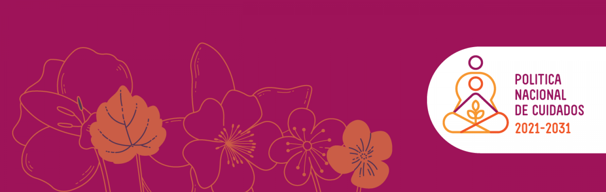

|
-

Actualice sus datos y consulte el estado de sus solicitudes
textotextotextotexto
-

IMG2
JJJJJJJJJJJJJJJJjjjj
-
SERVICIOS Y BENEFICIOS
Consulte aqui la politica institucional la atencion de
-
ITS4FUN
whysoserius?
Comunicados recientes
Un total de 32 mujeres indígenas cabécar del territorio Nairi Awari, en Pacuarito de Siquirres, provincia de Limón, culminaron con éxito el proceso de Formación Humana del Instituto Mixto de Ayuda Social (IMAS).
Esta es la primera vez que se lleva a cabo dicha iniciativa en ese territorio, y responde al “Modelo Intercultural para la prestación de servicios y beneficios...

Conozca la estrategia

La Estrategia Nacional “Puente al Desarrollo” surge en el seno del Plan Nacional de Desarrollo con el propósito de incidir en la reducción de la pobreza extrema y la desigualdad social. Esta estrategia brinda una atención integral, preferente y oportuna a las familias en pobreza extrema desde todas las dimensiones de intervención institucional.


Conozca más sobre IMAS
Se utilizará dos métodos de medición de pobreza, de forma individual o combinada, de acuerdo con las características o requerimientos de programa, proyecto, servicio y beneficio, a saber:

El Método de Línea de Pobreza
Se clasificarán las familias según ingreso per cápita en pobreza extrema, pobreza básica y no pobres.

El Método de Puntaje
Se obtiene mediante la ponderación de las condiciones más determinantes de las familias para medir pobreza, que se resume en un indicador la situación socioeconómica que viven las familias.
* Uso del Índice de Pobreza Multidimensional (IPM), el cual aporta -adicionalmente- información en cinco aspectos claves como son la educación, salud, trabajo, protección social, vivienda y uso de Internet.

Se identifica como beneficiario o beneficiara a las persona, familia, agrupación o comunidad, en condición de pobreza o de riesgo y vulnerabilidad social, seleccionada mediante los mecanismos de calificación institucionales.

La selección se realiza mediante la Ficha de Información Social (FIS), es el l instrumento de recolección de datos socioeconómicos y demográficos de las personas y familias que permite calificar y caracterizar a la población en situación de pobreza. Se utiliza para el registro de potenciales beneficiarios en el Sistema de Información de la Población Objetivo (SIPO).